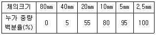
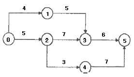
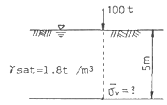
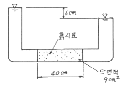
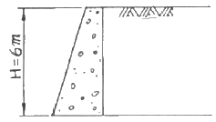

건설재료시험산업기사 (2010-03-07 기출문제)
1과목: 콘크리트공학
1. 시멘트의 저장시 주의할 사항으로 옳지 않은 것은?
- 시멘트는 방습적인 구조로 된 사일로 또는 창고에 품종별로 구분하여 저장하여야 한다.
- 포대시멘트를 쌓아올리는 높이는 13포대 이하로 하는 것이 바람직하다.
- 저장 중에 굳은 시멘트는 적당한 시험을 통해서 사용하여야 한다.
- 시멘트의 온도가 너무 높을 때는 온도를 낮추어 사용한다.
(정답률: 83%)

2. 콘크리트 치기를 한 후 응결이 종료될 때까지 발생하는 초기균열에 해당되지 않는 것은?
- 거푸집 변형에 따른 균열
- 온도균열
- 침하수축균열
- 플라스틱수축균열
(정답률: 53%)
3. 습식법으로 제조된 숏크리트에 대한 설명으로 틀린 것은?
- 품질관리가 쉽다.
- 재료의 공급에 제한을 받는다.
- 비교적 장거리의 압송이 가능하다.
- 분진이 적다.
(정답률: 62%)
4. 고강도 콘크리트의 설계기준압축강도는 보통(중량)콘크리트에서 최소 몇 MPa이상이어야 하는가?
- 30
- 35
- 40
- 45
(정답률: 86%)
5. 콘크리트 비비기에 대한 설명으로 틀린 것은?
- 콘크리트의 재료는 반죽된 콘크리트가 균질하게 될 때까지 충분히 비벼야 한다.
- 비비기 시간에 대한 시험을 실시하지 않은 경우 그 최소 시간은 가경식 믹서일 때에는 1분 30초 이상을 표준으로 한다.
- 비비기는 미리 정해둔 비비기 시간의 3배 이상 계속하지 않아야 한다.
- 연속믹서를 사용할 경우, 비비기 시작 후 최초에 배출되는 콘크리트는 사용할 수 있다.
(정답률: 87%)
6. 워커빌리티(Workability)에 대한 설명으로 옳은 것은?
- 거푸집에 다져 넣을 수 있고, 거푸집을 제거하면 천천히 형상이 변하기는 하지만 재료가 분리되지는 않는 굳지 않은 콘크리트의 성질
- 수량의 다소에 따르는 반죽이 되고, 진 정도를 나타내는 굳지 않은 콘크리트의 성질
- 반죽질기 여하에 따른 작업의 난이도 및 재료분리에 저항하는 정도를 나타내는 굳지 않은 콘크리트의 성질
- 골재의 형상 및 입도, 잔골재율, 반죽질기 등에 따르는 마무리하기 쉬운 정도를 나타내는 굳지 않은 콘크리트의 성질
(정답률: 62%)
7. 단위용적질량이 1500 kg/m3 이고 밀도가 2.5g/cm3인 굵은 골재의 실적률은?
- 40%
- 50%
- 60%
- 70%
(정답률: 82%)
8. 프리텐션 방식으로 프리스트레싱할 때의 콘크리트 압축강도는 최소 얼마이상이어야 하는가? (단, 실험이나 기존의 적용 실적 등을 통하여 안전성이 증명된 경우를 제외한다.)
- 26MPa
- 28MPa
- 30MPa
- 35MPa
(정답률: 71%)
9. 다음 중 알칼리 골재반응의 종류가 아닌 것은?
- 알칼리-실리카 반응
- 알칼리-탄산염 반응
- 알칼리-실리케이트 반응
- 알칼리-황산염 반응
(정답률: 52%)
10. 시방배합결과 물 170 kg/m3, 시멘트 350 kg/m3, 잔골재 700 kg/m3, 굵은골재 1000kg/m3 을 얻었다. 현장에서 골재의 입도는 시방배합에 가정한 것과 동일하고 잔골재 및 굵은골재의 표면수가 각각 3%와 1% 일 경우 현장배합상의 단위수량은?
- 129 kg/m3
- 139 kg/m3
- 191 kg/m3
- 201 kg/m3
(정답률: 69%)
11. 콘크리트표준시방서에서는 보통포틀랜드시멘트를 사용하여 시공한 일반콘크리트 구조물의 경우 최소 습윤양생기간을 얼마로 규정하고 있는가? (단, 일평균 기온이 15℃ 이상인 경우)
- 3일
- 5일
- 7일
- 14일
(정답률: 72%)
12. 일반 수중콘크리트의 단위 시멘트량은 얼마 이상을 표준으로 하는가?
- 300kg/m3
- 340kg/m3
- 370kg/m3
- 400kg/m3
(정답률: 64%)
13. 품질관리의 기본 4단계에 속하지 않는 것은?
- 계획
- 준비
- 실시
- 조치
(정답률: 76%)
14. 한중 콘크리트에 대한 설명으로 틀린 것은?
- 하루의 평균기온이 4℃ 이하가 예상되는 조건일 때는 한중 콘크리트로 시공하여야 한다.
- 타설할 때의 콘크리트 온도는 구조물의 단면 치수, 기상 조건 등을 고려하여 5~20℃의 범위에서 정하여야 한다.
- 콘크리트는 타설 후 초기에 동결하지 않도록 잘 보호하여야 하고, 초기양생에 주의하여야 한다.
- 콘크리트 재료의 온도를 높이기 위하여 물, 골재, 시멘트를 가열하여 사용하는 것이 좋다.
(정답률: 97%)
15. 조강성, 내화성, 화학적 저항성이 높고 발열량이 커 긴급을 요하는 공사, 내화용 콘크리트, 해양콘크리트 또는 한중공사의 시공에 적절히 이용될 수 있는 시멘트는?
- 팽창 시멘트
- 고로 시멘트
- 실리카 시멘트
- 알루미나 시멘트
(정답률: 56%)
16. 콘크리트의 배합에 대한 설명으로 틀린 것은?
- 배합강도 결정을 위한 콘크리트 압축강도의 표준편차는 실제 사용한 콘크리트의 20회 이상의 시험실적으로부터 결정하는 것을 원칙으로 한다.
- 콘크리트의 배합강도는 설계기준압축강도보다 충분히 크게 정하여야 한다.
- 물-결합재비는 소의 강도, 내구성, 수밀성 및 균열 저항성 등을 고려하여 정하여야 한다.
- 단위수량은 작업이 가능한 범위 내에서 될 수 있는 대로 적게 되도록 시험을 통해 정하여야 한다.
(정답률: 61%)
17. 콘크리트의 크리프(creep)에 대한 설명으로 틀린 것은?
- 재하시 콘크리트의 재령이 작을수록 크리프는 크다.
- 부재의 치수가 적을수록 크리프는 크다.
- 크리프는 콘크리트의 탄성적인 성질에 의하여 발생한다.
- 단위시멘트량이 많을수록 크리프는 크다.
(정답률: 28%)
18. 콘크리트의 단위잔골재량과 단위굵은골재량이 각각 700kg/m3과 1060kg/m3이며, 잔골재와 굵은골재의 표건밀도가 각각 2.61g/cm3 및 2.65g/cm3 일 때 잔골재율(S/a)은 약 얼마인가?
- 35%
- 40%
- 45%
- 50%
(정답률: 72%)
19. 콘크리트의 압축강도 시험에 관한 설명 중 틀린 것은?
- 공시체의 높이(h)와 지름(d)의 비(h/d)가 작을수록 큰 강도를 나타낸다.
- 하중을 가하는 속도가 빠를수록 큰 강도를 나타낸다.
- 공시체의 높이(h)와 지름(d)의 비(h/d)가 같은 경우, 지름이 클수록 작은 강도를 나타낸다.
- 시험직전에 건조시켜 시험을 한 경우가 습윤상태 그대로 시험하였을 때보다 작은 강도를 나타낸다.
(정답률: 60%)
20. 콘크리트의 온도균열에 대한 시공상의 대책으로 잘못된 것은?
- 단위시멘트량을 많게 한다.
- 1회의 타설높이를 낮게 한다.
- 수축줄눈을 설치한다.
- 수화열이 낮은 시멘트를 사용한다.
(정답률: 83%)
2과목: 건설재료 및 시험
21. 석재의 모양에 따른 분류에서 면이 원칙적으로 거의 사각형에 가까운 것으로 길이는 네 면을 쪼개어 그 면에 직각으로 측정한 길이가 면의 최소 변의 1.5배 이상인 석재는?
- 견치석
- 사고석
- 판석
- 각석
(정답률: 34%)
22. 목재의 함수율 측정시험에서 건조 전 시료중량이 2.8kg, 절대건조 후 중량이 2.5kg 이었다면 이 목재의 함수율은?
- 15%
- 14%
- 13%
- 12%
(정답률: 57%)
23. 굵은 골재의 체가름 시험 결과 각 체의 누적잔류량이 다음의 표와 같을 때 조립률은 얼마인가?

- 3.35
- 5.58
- 7.35
- 7.58
(정답률: 48%)
24. 강의 열처리 방법 중 강의 경도, 강도를 증가시키기 위한 것으로 고온으로 가열하여 냉수, 온수 또는 기름에 담가 냉각하여 처리하는 것을 무엇이라 하는가?
- 불림
- 풀림
- 담금질
- 뜨임질
(정답률: 66%)
25. 르샤틀리에(Le Chatelie)비중병의 0.5cc눈금까지 광유를 주입하고 시료로 시멘트 64g을 가하여 눈금이 21.5cc로 증가되었을 때 이 시멘트의 비중은?
- 3.01
- 3.⑤
- 3.12
- 3.17
(정답률: 72%)
26. 역청재료의 연화점은 시료를 규정 조건에서 가열하였을 때 시료가 연해져서 규정거리 몇 mm 처졌을 때의 온도인가?
- 20.4
- 25.4
- 30.4
- 35.4
(정답률: 55%)
27. 시멘트의 수화작용을 촉진하는 혼화제로써 쓰이는 것은?
- 염화칼슘
- 플라이애쉬
- 빈졸레진
- 포졸리스
(정답률: 35%)
28. 다음 중 석유아스팔트의 종류가 아닌 것은?
- 록(Rock)아스팔트
- 블론(Blown)아스팔트
- 용제추출(Propane)아스팔트
- 스트레이트(Straight)아스팔트
(정답률: 52%)
29. 다음 중 폭약으로 칼릿(carlit)을 사용할 수 없는 경우는 어느 것인가?
- 경질토사의 절토용
- 채석장에서 큰 돌의 채취용
- 용수가 있는 터널공사의 발파용
- 갱외(坑外)의 암석절취용
(정답률: 71%)
30. 이형철근에서 표면의 마디를 만드는 이유로 옳은 것은?
- 부착강도 향상
- 인장강도 향상
- 압축강도 향상
- 충격강도 향상
(정답률: 71%)
31. 스트레이트아스팔트와 비교한 블론(Blown)아스팔트의 성질에 관한 다음 설명 중 틀린 것은?
- 탄성이 풍부하다.
- 감온성이 크다.
- 침입도가 작다.
- 신도가 작다.
(정답률: 61%)
32. 골재의 단위 부피가 0.78m3인 콘크리트에서 잔골재율이 39% 이고 잔골재의 표건밀도가 2.62g/cm3 이면, 단위 잔골재량은 얼마인가?
- 204 kg
- 304 kg
- 597 kg
- 797 kg
(정답률: 88%)
33. 철근의 기호를 옳게 설명한 것은?
- SR 240 : 항복강도가 240MPa인 이형철근
- SR 300 : 인장강도가 300MPa인 원형철근
- SD 300 : 항복강도가 300MPa인 이형철근
- SD 500 : 인장강도가 500MPa인 원형철근
(정답률: 52%)
34. 다음 중에서 그라우트(grout)용 혼화제로서 필요한 성질에 해당하지 않는 것은?
- 재료의 분리가 일어나지 않아야 한다.
- 블리딩 발생이 없어야 한다.
- 주입이 용이하여야 한다.
- 그라우트를 수축시키는 성질이 있어야 한다.
(정답률: 82%)
35. 잔골재 조립률은 2.98, 굵은 골재 조립률은 6.33, 잔골재 대 굵은 골재 비가 1 : 1.9일 때 혼합골재의 조립률은?
- 3.21
- 4.13
- 5.17
- 9.31
(정답률: 64%)
36. 콘크리트 재료의 1회 계량분에 대한 허용오차로 옳은 것은?
- 물 : ±5%
- 혼화제 : ±3%
- 시멘트 : ±2%
- 혼화재 : ±1%
(정답률: 67%)
37. 혼화재료는 소요의 성능을 얻기 위한 사용량의 다소에 의해 혼화제와 혼화재로 대별된다. 그 사용량의 기준이 되는 재료는?
- 물
- 시멘트
- 모래
- 자갈
(정답률: 86%)
38. 다음 중에서 폭발력이 강하고 수중(물속)에서도 폭발할 수 있는 다이나마이트(dynamite)는?
- 분상 다이나마이트
- 규조토 다이나마이트
- 교질 다이나마이트
- 스트레이트 다이나마이트
(정답률: 71%)
39. 직경 20cm, 길이 3m인 재료를 축방향으로 인장을 가했을 때 이때의 변형을 측정한 결과 직경이 0.1mm 작아지고 길이가 6mm 늘어났다면 이 재료의 포아슨(poisson)수는 얼마인가?
- 1
- 2
- 3
- 4
(정답률: 58%)
40. 시멘트의 비표면적 시험에 관한 설명중 틀린 것은?
- 블레인 공기 투과장치를 사용하여 시험할 수 있다.
- 시멘트의 분말도를 알아보는 시험이다.
- 시멘트 내의 공기량을 측정하는 시험이다.
- 표준체에 의한 방법으로도 시험할 수 있다.
(정답률: 48%)
3과목: 건설시공학
41. 다음 기초 말뚝 중 말뚝박기 방법이 다른 것은?
- PC 말뚝
- 레이몬드(raymond)말뚝
- 원심력 콘크리트 말뚝
- 강관 말뚝
(정답률: 31%)
42. 다음 중 성토 재료로서 적당하지 않은 흙은?
- 함수비가 액성한계를 넘은 흙
- 안정에 필요한 전단강도를 가지고 있는 흙
- 압축성이 적은 흙
- 시공기계의 트래피커빌리티(Trafficability) 확보 등 시공이 용이한 흙
(정답률: 63%)
43. 다음은 네트워크(Net work) 공정표의 특징을 설명한 것이다. 옳지 않은 것은?
- 담당자의 공사착수가 예정되므로 미리 충분한 계획을 세울 수 있다.
- 공정표가 보기 쉽고 개념적인 것이 숫자화되어 신뢰도가 크다.
- 작성 및 수정이 어렵다.
- 공정의 진척, 지연의 상황판단이 어렵다.
(정답률: 40%)
44. 토공 작업에서 불도저로 토량 138240m3를 60일 만에 끝내려고 할 때 불도저의 소요대수는 얼마인가? (단, 불도저 1시간당 작업량 24m3/h, 1일 작업시간 8시간, 가동율 80%)
- 19대
- 15대
- 12대
- 10대
(정답률: 56%)
45. 믹서의 1배치 용량 0.3m3, 작업효율 0.8, 1배치 혼합시간 4분인 경우 콘크리트 믹서의 시간당 작업량은?
- 0.86m3/hr
- 3.60m3/hr
- 5.24m3/hr
- 7.80m3/hr
(정답률: 48%)
46. 교량가설시 비계를 사용하는 공법이 아닌 것은?
- 새들 공법
- 벤트 공법
- 부선식 공법
- 이렉션 트러스 공법
(정답률: 20%)
47. 다음과 같은 공정표에서 주공정(C.P)은 몇일인가?

- 15일
- 16일
- 17일
- 18일
(정답률: 65%)
48. 유기질토는 대개 지하수나 지면위나 지면 가까이에 있는 낮은 지역에서 발견된다. 이 유기질토의 특징이 아닌 것은?
- 유기질 속의 산성성분은 지중매설물을 부식시키는 경향이 있다.
- 특유의 냄새가 있다.
- 자연함수비가 매우 높으며 1차 압밀 후 2차 압밀이 있다.
- 순간 침하량이 매우 크며 장기 침하에는 비교적 안전하다.
(정답률: 58%)
49. 불도저로 운반거리가 50m 이고, 밀어가는 속도 V1 = 36m/min, 후퇴하는 속도 V2 = 42m/min 이고, 또 대기시간 t = 0.25min 이라 할 때 싸이클 타임(cm)은?
- 2.52min
- 2.66min
- 2.75min
- 2.83min
(정답률: 69%)
50. 연속된 종방향의 철근을 사용하여 콘크리트 포장의 횡줄눈을 생략시켜 주행성을 좋게 하는 포장 공법을 무엇이라 하는가?
- 시멘트 콘크리트포장
- 특수 콘크리트포장
- 연속 철근 콘크리트포장
- 선유보강 시멘트 콘크리트포장
(정답률: 82%)
51. 터널의 외형크기 단면의 강재틀을 굴착진행방향에 따라 압입하여 나가는 연약지반 터널굴착방법은?
- 개착공법
- 침매공법
- 역권공법
- 쉴드공법
(정답률: 81%)
52. 공기케이슨(Pneumatic caisson)기초의 장점으로 잘못된 것은?
- 깊이에 제약이 없이 시공 가능하다.
- Dry work이므로 침하공정이 빠르다.
- 정확한 지지력의 측정이 가능하다.
- 저부 콘크리트의 신뢰도가 크다.
(정답률: 68%)
53. 수직갱에 물이 고였을 경우 어떤 발파방법이 좋은가?
- 벤치컷
- 번컷
- 피라밋컷
- 스윙컷
(정답률: 70%)
54. 두 자유면을 가진 벤치컷에 있어서 구멍과 구멍의 간격을 1.2m로 하고 최소 저항선을 1.6m, 장약량은 10.5kg이라 할 때 천공 깊이 N을 구하면 얼마인가? (단, C = 0.56)
- 4.56m
- 9.77m
- 12.62m
- 14.71m
(정답률: 35%)
55. 45000m3(완성된 토량)의 성토를 하는데 유용토가 35000m3(느슨한 토량)있다. 부족한 토량은 본바닥 토량으로 얼마인가? (단, 토량변화율은 L=1.25, C=0.9 이다.)
- 15000m3
- 18000m3
- 22000m3
- 25000m3
(정답률: 50%)
56. 기초 말뚝의 지지력 공식중 정역학적(靜力學的)지지력 산정 공식은?
- Terzaghi 공식
- Engineering News 공식
- Weisbach 공식
- Sander 공식
(정답률: 45%)
57. 입상재료층에 점성이 낮은 역청재료를 살포, 침투시켜 조기층, 기층 등의 방수성을 높이고, 기층의 모세공극을 메워 그 위에 포설하는 아스팔트 혼합물층과의 부착을 좋게 하기 위해 역청재료를 얇게 피복하는 것을 무엇이라고 하는가?
- 택 코트
- 프라임 코트
- 실 코트
- 아마 코트
(정답률: 62%)
58. 일반적으로 높이가 6m 이상일 때 사용되며 역T형 옹벽에서 옹벽 벽체의 강도가 부족한 경우에 채택되는 옹벽은?
- 중력식 옹벽
- L형 옹벽
- 반중력식 옹벽
- 부벽식 옹벽
(정답률: 46%)
59. 표준관입 시험(S.P T)에 대한 다음 설명 중에서 잘못된 것은?
- 표준관입 시험의 N치는 모래의 상대밀도를 추정하는데 이용된다.
- 심도가 깊어지면 로드(Rod)의 변형에 의한 타격에너지 손실과 마찰이 생기므로 N치의 수정이 필요하다.
- N치를 이용하여 흙의 내부마찰각이나 일축압축 강도의 추정도 가능하다.
- 표준관입 시험은 매우 연약한 점토지반에 적용하는 경우에 신뢰성이 매우 높다.
(정답률: 38%)
60. 다목적 댐과 같이 상류 측에 콘크리트로 차수벽을 만들고 중앙 및 하류 측은 석괴로 쌓아 올리는 댐의 형식은?
- 표면 차수벽형
- 내부 차수벽형
- 코어형
- 록필형
(정답률: 67%)
4과목: 토질 및 기초
61. 점토(ø=0)의 자연 시료에 대한 일축압축 강도가 3.6km/cm2이고 이 흙을 되비볐을 때의 파괴압축 응력이 1.2kg/cm2 이었다. 이 흙의 점착력(C)과 예민비(St)는 얼마인가?
- C = 1.8kg/cm2, St =3
- C = 1.8kg/cm2, St =0.33
- C = 2.4kg/cm2, St =3
- C = 2.4kg/cm2, St =0.33
(정답률: 54%)
62. 포화점토의 비압밀 비배수 시험에 대한 설명으로 옳지 않은 것은?
- 구속압력을 증대시키면 유효응력은 커진다.
- 구속압력을 증대한 만큰 간극수압은 증대한다.
- 구속압력의 크기에 관계없이 전단강도는 일정하다.
- 시공 직후의 안정 해석에 적용된다.
(정답률: 19%)
63. 모래 등과 같은 점성이 없는 흙의 전단강도 특성에 대한 설명 중 잘못된 것은?
- 조밀한 모래의 전단과정에서는 전단응력의 피크(peak)점이 나타난다.
- 느슨한 모래의 전단과정에서는 응력의 피크점이 없이 계속 응력이 증가하여 최대 전단응력에 도달한다.
- 조밀한 모래는 변형의 증가에 따라 간극비가 계속 감소하는 경향을 나타낸다.
- 느슨한 모래의 전단과정에서는 전단파괴될 때까지 체적이 계속 감소한다.
(정답률: 40%)
64. 그림과 같은 지반에 100t의 집중하중이 지표면에 작용하고 있다. 하중 작용점 바로 아래 5m 깊이에서의 유효 연직응력은 얼마인가? (단, γsat = 1.8t/m3 이고 영향계수 I=0.4775임)

- 1.91 t/m2
- 7.91 t/m2
- 10.91 t/m2
- 5.91 t/m2
(정답률: 10%)
65. 다음 중 사면의 안정해석방법이 아닌 것은?
- 마찰원법
- 비숍(Bishop)의 방법
- 펠레니우스(Fellenius) 방법
- 카사그란데(Casagrande)의 방법
(정답률: 54%)
66. 예민비가 큰 점토란?
- 입자모양이 둥근 점토
- 흙을 다시 이겼을때 강도가 크게 증가하는 검토
- 입자가 가늘고 긴 형태의 점토
- 흙을 다시 이겼을때 강도가 크게 감소하는 점토
(정답률: 57%)
67. 다음 중 교란 시료를 이용하여 수행하는 토질 시험이 아닌 것은?
- 투수시험
- 입도분석시험
- 유기물 함량시험
- 액 ㆍ 소성한계시험
(정답률: 40%)
68. 외경(Do)이 50.8mm, 내경(Di)이 47.6mm인 얇은관 샘플러(Thin wall tube sampler)의 면적비는 약 얼마인가?
- 11%
- 12%
- 13%
- 14%
(정답률: 28%)
69. 비중 2.65, 간극률 50%인 경우에 Quick Sand 현상을 일으키는 한계 동수 경사는?
- 0.325
- 0.825
- 0.512
- 1.013
(정답률: 70%)
70. 표준관입시험(S.P T) 결과 N치가 25 이었고, 그때 채취한 교란시료로 입도시험을 한 결과 입자가 모나고, 입도분포가 불량할 때 Dunham공식에 의해서 구한 내부 마찰각은?
- 약 42°
- 약 40°
- 약 37°
- 약 32°
(정답률: 35%)
71. Sand drain 공법의 주된 목적은?
- 압밀침하를 촉진시키는 것이다.
- 투수계수를 감소시키는 것이다.
- 간극수압을 증가시키는 것이다.
- 지하수위를 상승시키는 것이다.
(정답률: 32%)
72. 어떤 흙의 건조단위중량이 1.724g/cm3이고, 비중이 2.65일 때 다음 설명 중 틀린 것은?
- 간극비는 0.537 이다.
- 간극률은 34.94% 이다.
- 포화상태의 함수비는 20.26% 이다.
- 포화단위중량은 2.223g/cm3 이다.
(정답률: 32%)
73. 직경 30cm의 말뚝 20분을 타입하여 기초 저판을 지지하고 있다. 1본의 말뚝이 외말뚝으로 30t의 극한 지지력을 가지고 있다면 무리말뚝의 극한 지지력은? (단, 무리말뚝의 효율 E=0.645 이다)
- 726t
- 387t
- 300t
- 600t
(정답률: 47%)
74. 단위체적 중량이 1.65t/m3, 내부마찰각 15° 이고, 점착력이 0인 사질토 지반의 지표면에 폭 3m의 연속 기초를 시공할 때 기초의 극한 지지력은 얼마인가? (단, 내무마찰각 15° 일 때, Nc = 6.5, Nγ = 1.2, Nq = 4.7, 형상계수 α=1, β=0.5)
- 1.88t/m2
- 2.97t/m2
- 2.54t/m2
- 3.12t/m2
(정답률: 22%)
75. 어떤 점토시료의 압밀시험에서 시료의 두께가 20cm라고 할 때, 압밀도 50%에 도달할 때까지의 시간을 구하면? (단, 시료의 압밀계수는 2.3×10-3cm2/sec이고, 양면배수조건 이다.)
- 10.24 시간
- 5.12 시간
- 2.38 시간
- 1.19 시간
(정답률: 18%)
76. 흙의 동해(凍害)에 관한 다음 설명 중 옳지 않은 것은?
- 동상현상은 빙층(ice lens)의 생장이 주된 원인이다.
- 사질토는 모관상승높이가 작아서 동상이 잘 일어나지 않는다.
- 실트는 모관상승높이가 작아서 동상이 잘 일어나지 않는다.
- 점토는 모관상승높이는 크지만 동상이 잘 일어나는 편은 아니다.
(정답률: 80%)
77. 그림과 같이 정수위 투수시험을 한 결과 10분 동안에 40.5cm3의 물이 유출되었다. 이 흙의 투수계수는?

- 2.5 × 10-1 cm/sec
- 5.0 × 10-2 cm/sec
- 2.5 × 10-3 cm/sec
- 5.0 × 10-4 cm/sec
(정답률: 30%)
78. 다음은 다짐시험에서 건조밀도와 함수비와의 관계를 설명한 것이다. 잘못된 것은?
- 건조밀도-함수비 곡선에서 건조밀도가 최대가 되는 밀도를 최대 건조밀도라 한다.
- 최대 건조밀도를 나타내는 함수비를 최적 함수비라고 한다.
- 흙이 조립토(組立土)에 가까울수록 최적 함수비의 값은 크다.
- 최적 함수비는 흙의 종류에 따라 다른 값이 나온다.
(정답률: 52%)
79. 모래 치환법에 의한 흙의 밀도 측정법에서 모래(표준사)는 무엇을 구하기 위해 사용되는가?
- 흙의 중량
- 시험구멍의 부피
- 흙의 함수비
- 지반의 지지력
(정답률: 48%)
80. 지표면은 수평, 벽체 배면은 연직, 흙의 내부마찰각 ø = 30°, 흙의 단위중량 γ = 1.8t/m3 일 때 높이 H = 6m인 옹벽에 작용하는 주동토압의 합력 PA는?

- 10.8t/m
- 12.6t/m
- 14.3t/m
- 15.5t/m
(정답률: 42%)